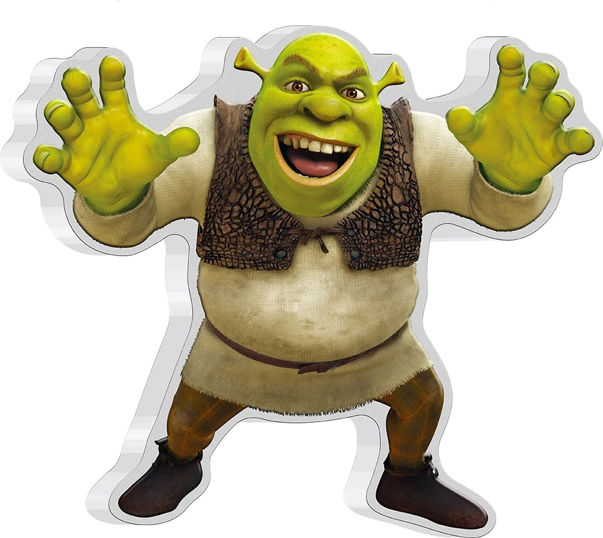

Мои проекты

Сайт про шрека
Мой перший сайт про шрека

Сайт про машину
Мій другій сайт про машину toyota chaser
Мене звати Олександр Троценко, я учень 6 класу. Захоплююся програмуванням, особливо веброзробкою та створенням власних сайтів. Мені подобається вивчати нові технології, працювати над цікавыми проєктами та вдосконалювати свої навички. На цьому сайті я зібрав свої роботи, які демонструють мої знання, творчість і досягнення у сфері програмування. Сподіваюся, вам буде цікаво ознайомитися з моїми проєктами. Приємного перегляду! 😊

Мой перший сайт про шрека
Мій другій сайт про машину toyota chaser
Навички, які я опанував у Logika
Скелет та структура сайта
Стиль, краса та оформлення
Проєктування та дизайн макетів
Паралельно з навчанням у школі я здобуваю профільні знання у школі програмування Logika.
Вивчаю повний цикл створення сайтів: від розробки дизайну у Figma до верстки за допомогою HTML та CSS.
Приділяю велику увагу практиці та самостійно працюю над кодом після занять.
Прагну розвиватися у сфери веб-розробки та створювати сучасні адаптивні інтерфейси.